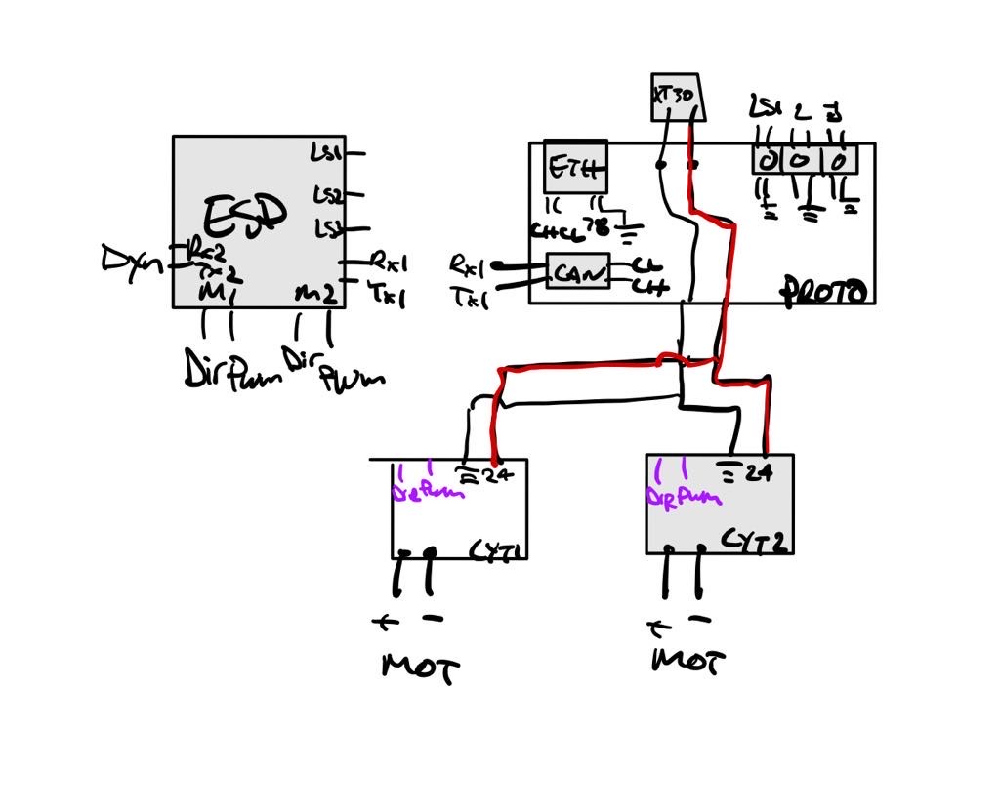

Rover, véhicule téléopéré simulant un rover martien
Le Rover est un robot téléopéré conçu pour simuler un rover martien. Il est équipé de plusieurs capteurs et d'une caméra pour permettre aux opérateurs de le contrôler à distance.
Caractéristiques:
- Châssis en carbon
- 4 roues motrices
- Bras 5 axes
- Module Science
- Masse totale de moins de 50kg
Le Rover a été conçu par l'équipe de Robotique UdeS pour participer à la compétition University Rover Challenge ainsi que la Canadian International Rover Competition.
Mon rôle:
- Co-Direction avec Philippe Michaud
- Conception et fabrication du bras
- Conception du chassîs et de la suspension
- Programmation et schéma électrique du module science
- Conception et fabrication de pièces diverses
Co-Direction
En tant que co-directeur du projet, j'ai eu la responsabilité de coordonner les différentes équipes de travail. J'ai également été en charge de la planification des tâches et de l'organisation des membres. Mon rôle principal au début de mon mendat était d'aider les nouveaux membres dans leurs projets, autant dans le remu-méninge que dans le choix des composantes et des mécanismes.
Conception et fabrication du bras
Les requis:
- Mouvement dans au moins 5 axes
- Capacité de soulever 10kg
- Répétabilité de moins de 10mm
- Le plus léger possible
Plus d'information sur la conception du bras►
Conception du châssis
Le châssis a été refait au complet en 2024. La suspension utilise le principe de rocker et de 4 roues suelement. La suspension rocker permet d'avoir une force égale sur les 4 roues peu importe le terrain. J'ai décidé de refaire les rocker cette année afin d'Avoir de la place pour insérer l'électronique le plus proche des moteur de propulsion et sauver du poid. Le châssis sert aussi de boîte électrique et comprend tout le circuit de puissance, de data et l'ordinateur de bord.

Assurer une bonne traction permet de naviguer tous les terrains ainsi que battre les autres équipes au tir à la corde!
Programmation et schéma électrique du module science
Le module science est un module qui permet de faire des analyses sur le terrain. Il est équipé de plusieurs capteurs et d'une caméra pour permettre aux opérateurs de faire des analyses à distance. J'ai été en charge de la programmation et du schéma électrique de ce module pour aider l'équipe qui développe la partie mécanique. J'ai programmé la communication CANBus, l'intégration des capteur de fin de course et la programmation des moteurs.
Conception et fabrication de pièces diverses
En plus de mes tâches principales, j'ai également été en charge de la conception et de la fabrication de plusieurs pièces pour le Rover. J'ai utilisé une imprimante 3D pour fabriquer des pièces en plastique et j'ai utilisé un tour CNC pour fabriquer des pièces en aluminium. Plusieurs de mes réalisations sont les boîtiers protecteurs de chaque circuits imprimés, un support à caméra, support à antennes et plus encore.